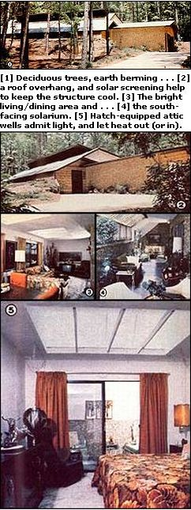
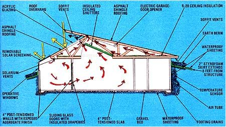

Although it cost non more than a comparable "surface" structure, this earth-sheltered home satisfies the majority of its own heating and cooling needs
In north Florida's subtropical panhandle region-where summertime humidity can average a clammy 82%, and temperatures in the 90's aren't even considered noteworthy enough to comment on-cooling a dwelling is usually of greater concern than is warming it. On the other hand, though, heating requirements can't be ignored altogether , since the region is subject to nearly 1,600 heating degree-days during its cold season.
Understandably enough, designing a passive solar home to suit such fluctuating conditions could present quite a challenge . . . but the folks at Tallahassee's Mad Dog Design and Construction Company felt that, by taking advantage of several "tried and true" locally popular building techniques and coupling them with modern thermal conditioning methods, they could come up with a house that would be comfortable throughout the year . . . but which would require little or no utility-supplied power for heating or cooling.
Essentially, the Florida builders used several passive methods-backed up by two active systems-to insure a pleasant interior climate during the hot summer months. First and foremost, the earth-sheltered structure relies on natural ventilation, combined with heat-gain prevention, to maintain a comfortable internal environment. Borrowing from traditional local designs (which, of course, evolved to suit the area's climate), the Sunshine Staters utilized high ceilings, continuous attic-linked soffit vents, and strategically placed windows to encourage the flow of air throughout the house.
For example, the south-facing solarium/greenhouse area incorporates ceiling mounted outlets that can be opened, in case of overheating, to allow warm air to duct into the attic and out the soffit vents. Similarly, in the house itself-which is separated from the solarium by a quartet of sliding glass doors-unwanted warmth can be vented around four movable 8' X 8' insulated ceiling shutters. These horizontally hinged overhead "flaps" are mounted in light wells which are framed into the front of the attic and faced with acrylic glazing. When the electrically operated sky shutters are three-quarters open, pockets are formed, which accumulate warm air and direct it upward . . . while permitting plenty of indirect light to brighten the rooms below.
Other heat-controlling elements in the unique design include [1] roof overhangs above the skylights, [2] solar screening over the greenhouse windows during the warmer months, [3] insulated draperies on the sliding glass doors, and [4] ceiling insulation with an R-value of 28. Additionally, the builders have taken advantage of deciduous trees to help shade the structure in the summer months.
Another factor that contributes to the energy efficiency of the Tallahassee residence is the dwelling's earth sheltering itself. Calculations made prior to construction had indicated that a large portion of the necessary tempering could be accomplished by using the soil as a massive heat sink, since about two-thirds of the building's wall area-as well as its entire floor-were slated to be below ground level. However, data gathered later showed that earth temperatures low enough for cooling purposes could be found only at a depth greater than five feet . . . so, to compensate for the fact that the earth-bermed structure was not wholly engulfed in soil, the Mad Dog designers merely insulated its surrounding earthen ramparts with a two-inch-thick Styrofoam beadboard skirt that extends outward eight feet from the home's concrete walls.
This protective "collar"-after being covered with waterproof sheeting and 12 inches of backfill-serves to minimize the effect of the sun and ambient air on the soil below (creating stable and comfortable temperatures at a depth of only four feet, even during the hottest months). It also provides an effective watershed that directs surface flow away from, rather than along, the sides of the building.
And the innovative designers didn't stop there: The Sunbelters also took the opportunity to bury a Givoni air tube (so named after its developer, Dr. Baruch Givoni) and a temperature sensor deep within the bean . . . allowing the home's residents to force cool evening air through the system to offset the effects of any heat gained during the day.
Several backup methods of comfort control were incorporated into the dwelling, as well. A whole-house attic fan-located in a central corridor-supplies additional positive ventilation as required ... and a 1-1/2-ton heat pump can be activated if air conditioning is needed (the unit is also capable of operating, more economically, as a noncooling dehumidifier alone).
When the winter months arrive, many of the same features that prevent heat accumulation in the summer can act to retain warmth. Because the cold season's sun is low and the deciduous trees have long since shed their leaves by then, the house receives ample insolation through the unshielded solarium glazing and the fully opened ceiling shutters . . . which can be closed at night to hold the day-gathered warmth in. Furthermore, the contact between the earth berm and the massive structure provides a 45-day "thermal lag" . . . which, in effect, permits the earthstored temperature extremes of the late summer to be dissipated over a period that extends about a month and a half into the cool season, thus helping with the heating load.
ENGINEERING CUTS COSTS
Normally, an earth-sheltered structure will start its "life" as an assembly of filled concrete block walls resting upon a reinforced monolithic slab . . . or-alternatively-8- to 12-inch poured bulkheads, on footings, surrounding a "floating" foundation. However, because the soil found at the building site has low permeability and is potentially unstable, the designers decided to utilize post-tensioned components, which would stand the effect of lateral loads or twisting resulting from shifting earth much better than would conventional methods of construction.
Post-tensioning, a comparatively new technique in the home-building industry, is in many ways ideal for use in earth-sheltered construction. Most important, it imparts additional compressive and tensile strength to any member upon which it's used. Unlike regular reinforced concrete construction (in which the steel rebar can begin to resist a load only after the concrete itself has failed ), a post-tensioned component incorporates a network of interwoven cables-encased in lubricated plastic sleeves and cast in the middle of the slab on three-foot centers-which are pulled to a tension of about 30,000 pounds after the pour sets, and locked in place by means of engineered wedges mounted in stressing anchors. This fantastic force puts the concrete under constant compression and increases its strength without the need for excessive mass (the four-inch floor slab is designed to support 3,500 pounds per square inch . . . a 40% greater load than a conventionally built pad of the same thickness could withstand).
Equally significant, post-tensioning can be accomplished right at the building site, using little special equipment. This do-it-yourself factor, in turn, allows for some creativity on the part of the builders . . . as evidenced-in the Tallahassee home-by the exposed aggregate finish on the solarium's interior walls: They were poured in forms lined with a one-inch layer of river rock, then removed with the stone fagade intact.
Finally, the use of the "pulling after pouring" technique can help cut materials costs. Recent studies of post-tensioned structures and "typical" earth-sheltered buildings show that only about half as much steel, and perhaps 40% as much concrete, will be required when a house is tensioned rather than conventionally poured . . . and the resulting shell is less likely to crack. So, although waterproofing is still necessary with any post-tensioned wall, the use of exotic (and costly) materials can be eliminated.
Because the north Florida dwelling was primarily designed to provide passive cooling rather than heating, the people at Mad Dog chose not to insulate the concrete mass. Instead, they merely poured their floor slab over a bed of gravel and waterproofing, installed footing drains, then tilted up the previously poured-and-tensioned wall panels and positioned them in perimeter slots that had been cast into the foundation. The "box" thus created was held together with steel corner brackets, and laterally supported by a series of stout cables which are strung between interlocking top plates on the rear wall and concrete "deadmen" sunk in the ground behind the structure. All the bulkhead surfaces were covered with a continuous layer of "Tu-Tuf" flexible lining material . . . then the house was bermed as described previously.
And, rather than covering the building's top with a layer of earth (which would have required a whole slew of additional engineering computations and upped the materials expense), the designers merely installed oversized roof trusses, and built a conventional-but well-insulated-asphalt-shingled "lid" . . . accepting what they feel are only minor thermal losses as a result.
The bottom line, though, is cost . . . and this 1,750-square-foot dwelling was constructed for about $35 per square foot, which is a good price even for aboveground houses in today's market. After living in it for nearly a full year, the owner states that the home works even better than she expected . . . thanks largely to the fact that she thoroughly understands how it functions, and willingly takes an active part in matching its capabilities to the fluctuations of the weather. Of course, one of the beauties of this particular home is that it works well in either a passive or an active mode. So, although an occupant who's insensitive to its design would be penalized by higher utility costs, one who works with the passive systems will enjoy considerable savings . . . and a comfortable passage through the seasons, as well!
|
 |
 |
|